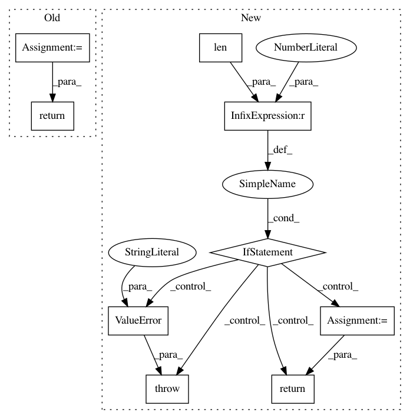

f966ef79ae7c47b93029e065b3ee6686bab5bff7,skimage/measure/fit.py,LineModel,predict_y,#LineModel#Any#Any#,147
Before Change
if params is None:
params = self.params
dist, theta = params
return (dist - x * math.cos(theta)) / math.sin(theta)
class LineModelND(BaseModel):
Total least squares estimator for N-dimensional lines.
After Change
if params is None:
params = self.params
assert params is not None
if len(params) != 2:
raise ValueError("Parameters are defined by 2 numbers.")
y = params[0] * x + params[1]
return y
class LineModelND(BaseModel):
Total least squares estimator for N-dimensional lines.
In pattern: SUPERPATTERN
Frequency: 4
Non-data size: 9
Instances
Project Name: scikit-image/scikit-image
Commit Name: f966ef79ae7c47b93029e065b3ee6686bab5bff7
Time: 2017-03-29
Author: jirka.borovec@seznam.cz
File Name: skimage/measure/fit.py
Class Name: LineModel
Method Name: predict_y
Project Name: Pinafore/qb
Commit Name: 6828141dcbd5324ebb36c31ab6e52ccded124860
Time: 2018-04-25
Author: ski.rodriguez@gmail.com
File Name: qanta/ingestion/preprocess.py
Class Name:
Method Name: nlp
Project Name: scikit-image/scikit-image
Commit Name: f966ef79ae7c47b93029e065b3ee6686bab5bff7
Time: 2017-03-29
Author: jirka.borovec@seznam.cz
File Name: skimage/measure/fit.py
Class Name: LineModel
Method Name: predict_x
Project Name: pymc-devs/pymc3
Commit Name: 80cef0161b14e581e94f52bfbbc5d0bfc60e6354
Time: 2017-07-10
Author: maxim.v.kochurov@gmail.com
File Name: pymc3/variational/flows.py
Class Name: Formula
Method Name: __call__